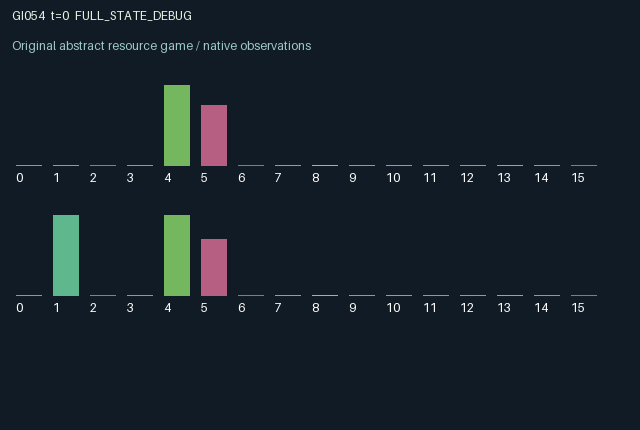

GI054 / LEGACY_ARRAY
astra-d2-00054: reciprocal sensing with a contested relay
2 agents5 actions16 observation columns32 original horizonRuntime: PASS
Release verification episode
Untrained uniform legal actions. Actual JAX state sampled along the full original episode; full-state debug camera. No human performance or learning claim.

Run this game
crucibles play --game 54
Start Python locally, then open the address printed by the terminal. Installation, multiplayer, takeover and keyboard controls →
Objective, rewards & ending
Exact task contract
{
"objective": "Accumulate original per-agent rewards under the interaction rules in mechanism.md.",
"natural_termination": "No early terminal; original t >= 32 horizon.",
"exact_transition_and_reward_source": "def raw_step(self, key, state, actions):\n rest = (actions == 0).astype(jnp.float32)\n work = ((actions == 1) | (actions == 2)) & (state['charge'] >= 0.22)\n probe = (actions == 3) & (state['charge'] >= 0.06)\n send = (actions == 4) & (state['charge'] >= 0.04)\n success = work & ((actions - 1) == state['target'])\n work_float = work.astype(jnp.float32)\n success_float = success.astype(jnp.float32)\n one_sender = jnp.sum(send.astype(jnp.int32)) == 1\n delivered = send & one_sender & (state['busy'] == 0)\n received = jnp.roll(delivered, 1)\n collision = jnp.all(send)\n burst = state['strain'] >= 0.72\n random_flip = jax.random.bernoulli(key, p=0.02 + 0.08 * state['strain'], shape=(2,))\n target = jnp.mod(state['target'] + state['pending'] + burst.astype(jnp.int32) + random_flip.astype(jnp.int32), 2).astype(jnp.int32)\n rewards = jnp.clip(\n work_float * jnp.where(success, 0.65, -0.45)\n + 0.15 * jnp.roll(success_float, 1)\n - 0.015 * probe.astype(jnp.float32)\n - 0.010 * send.astype(jnp.float32),\n -1.0, 1.0,\n ).astype(jnp.float32)\n next_state = {\n 't': state['t'] + jnp.array(1, dtype=jnp.int32),\n 'target': target,\n 'survey': jnp.where(probe, jnp.roll(state['target'], 1), state['survey']).astype(jnp.int32),\n 'survey_age': jnp.where(probe, 1, jnp.minimum(state['survey_age'] + 1, 8)).astype(jnp.int32),\n 'message': jnp.where(received, jnp.roll(state['survey'], 1), state['message']).astype(jnp.int32),\n 'message_age': jnp.where(received, jnp.minimum(jnp.roll(state['survey_age'], 1) + 1, 8), jnp.minimum(state['message_age'] + 1, 8)).astype(jnp.int32),\n 'charge': jnp.clip(state['charge'] + 0.02 + 0.18 * rest - 0.22 * work_float - 0.06 * probe.astype(jnp.float32) - 0.04 * send.astype(jnp.float32), 0.0, 1.0),\n 'strain': jnp.clip(0.86 * state['strain'] + 0.16 * jnp.roll(work_float, 1) + 0.08 * work_float - 0.12 * rest - 0.35 * burst.astype(jnp.float32), 0.0, 1.0),\n 'pending': jnp.roll(work.astype(jnp.int32), 1),\n 'busy': jnp.where(collision, 2, jnp.where(jnp.any(delivered), 1, jnp.maximum(state['busy'] - 1, 0))).astype(jnp.int32),\n 'last_work': work_float,\n 'last_success': success_float,\n 'last_return': rewards,\n 'last_action': actions.astype(jnp.int32),\n }\n done_all = next_state['t'] >= 32\n dones = jnp.stack([done_all, done_all]).astype(jnp.bool_)\n info = {'done_all': done_all, 'legal_mask': self.legal_actions(next_state)}\n return self.observe(next_state), next_state, rewards, dones, info"
}Declared per-step reward bounds: -1.0 to 1.0. Observability: source_defined.
Rules
Original mechanism document (historical status wording retained)
# astra-d2-00054: reciprocal sensing with a contested relay This parentless proposal uses generic decentralized sensing, stale information, shared-channel contention, and production externalities. Its source was authored without a parent, benchmark implementation, experiment outcome, or feedback capsule. Novelty, nonisomorphism, mechanism qualification, compilation, and learning effectiveness are not established. ## Actions and hidden dynamics Each agent has a hidden binary local production target, a battery, and strain. Crucially, an agent's private survey concerns the other agent's target. Actions are 0 recharge/rest, 1 produce on channel 0, 2 produce on channel 1, 3 survey the partner, and 4 relay the stored survey to the partner. All actions are legal; an operation lacking enough battery does nothing beyond background dynamics. Production, surveying, and relaying consume different amounts of battery. Production succeeds when its chosen channel matches the producer's current hidden target. Every powered production action schedules a target flip for the partner. That pending flip is consumed on the following transition, so the producer changes the partner's future production conditions. Production also increases own and partner strain. Sufficient accumulated strain causes an additional target flip and partially discharges the strain. A key-controlled random flip can also occur, at a probability depending on current strain. Binary flips combine modulo two, so coincident causes can cancel. Surveying stores an exact sample of the partner's target from before that transition's target updates. The sample is visible only to the surveying agent. Relaying sends the already stored sample, not a fresh sample, into the owner's inbox. Only one powered sender can succeed, and the shared channel must already be idle. Simultaneous senders collide and set two ticks of channel busy time; a successful relay sets one tick. Attempts while busy fail while still consuming their communication cost. New inbox values cannot affect an action already selected for that transition. ## Information and observation columns The 16 columns are: time/32; own private survey of the other target; survey age/8; own received message encoded as unknown=0, target-0=0.5, target-1=1; message age/8; own charge; own strain; other strain; shared busy time/2; own previous powered production flag; other previous powered production flag; own previous success flag; other previous success flag; own previous reward; own previous action/4; other previous action/4. Ages saturate at eight. Raw current target bits and future random flips are not directly observed. Historical public actions and success flags can provide additional inferential information; communication is not claimed to be the only way to infer a target. ## Incentives, delay, and reward bound Correct production pays 0.65, incorrect powered production pays -0.45, and each agent receives 0.15 times the partner's production-success flag. Survey and relay attempts incur small costs. An agent can therefore improve the partner's future information while sacrificing immediate production, or cause an extra future target change through its own production. Collision and busy periods create an endogenous timing constraint on information sharing. Recharge competes with all of those operations. The final reward expression uses `jnp.clip(..., -1.0, 1.0)`. All production and success indicators are binary, and communication costs are bounded. These are proposed incentives, not evidence that agents exploit the communication mechanism or achieve a learned advantage. ## Interface and evidence status The implementation intends the exact two-agent, 16-observation, five-action interface with fixed-shape JAX array state and scalar int32 time. Each step increments time once and reports both roles done when new-state time reaches 32. Terminal state is retained, and info contains scalar `done_all` plus the next-state bool legal mask. This handoff contains source and provenance only; permitted syntax parsing is not isolated validation, duplicate screening, mechanism eligibility, or a learning result.
Commands
0Rest
1Work choice 0
2Work choice 1
3Probe partner target
4Transmit survey
Roles & abilities
agent_0 Original legacy agent; see mechanism and source
agent_1 Original legacy agent; see mechanism and source
Observation permissions
Training receives only the original observation rows. Role cameras use declared visibility; debug cameras are explicitly marked. Local benchmark records log debug exposure and role takeover history.
Exact observation layout
[
{
"slice": [
0,
16
],
"visibility": "exact original observe() below",
"source_code": "def observe(self, state):\n obs = jnp.zeros((2, 16), dtype=jnp.float32)\n obs = obs.at[:, 0].set(state['t'].astype(jnp.float32) / 32.0)\n obs = obs.at[:, 1].set(state['survey'].astype(jnp.float32))\n obs = obs.at[:, 2].set(state['survey_age'].astype(jnp.float32) / 8.0)\n obs = obs.at[:, 3].set((state['message'].astype(jnp.float32) + 1.0) / 2.0)\n obs = obs.at[:, 4].set(state['message_age'].astype(jnp.float32) / 8.0)\n obs = obs.at[:, 5].set(state['charge'])\n obs = obs.at[:, 6].set(state['strain'])\n obs = obs.at[:, 7].set(jnp.roll(state['strain'], 1))\n obs = obs.at[:, 8].set(state['busy'].astype(jnp.float32) / 2.0)\n obs = obs.at[:, 9].set(state['last_work'])\n obs = obs.at[:, 10].set(jnp.roll(state['last_work'], 1))\n obs = obs.at[:, 11].set(state['last_success'])\n obs = obs.at[:, 12].set(jnp.roll(state['last_success'], 1))\n obs = obs.at[:, 13].set(state['last_return'])\n obs = obs.at[:, 14].set(state['last_action'].astype(jnp.float32) / 4.0)\n obs = obs.at[:, 15].set(jnp.roll(state['last_action'], 1).astype(jnp.float32) / 4.0)\n return obs"
}
]Entity visibility & attributes
[]
Actual verification & provenance
Per-game execution receipt
{
"game": "gi054",
"status": "PASS",
"verification_revision": 2,
"source_sha256": "0706882d81eedfa9c0e45de10cd5f741de1279610f753f1b95827d6c765c7a55",
"seed": 20261101,
"runtime": {
"jax": "0.4.38",
"numpy": "1.26.4",
"devices": [
"TFRT_CPU_0"
]
},
"dimensions": {
"num_agents": 2,
"observation_size": 16,
"num_actions": 5,
"max_steps": 32
},
"checks": {
"eager_reset": {
"status": "PASS",
"seconds": 0.6319015026092529
},
"observation_spaces_legal_masks": {
"status": "PASS",
"seconds": 0.1768813133239746
},
"eager_step": {
"status": "PASS",
"seconds": 1.2582972049713135
},
"jit_reset": {
"status": "PASS",
"seconds": 0.30588221549987793
},
"jit_step": {
"status": "PASS",
"seconds": 0.37749266624450684
},
"eager_jit_integer_parity_float_measurement": {
"status": "PASS",
"seconds": 0.0009417533874511719
},
"jit_vmap_reset": {
"status": "PASS",
"seconds": 0.48163366317749023
},
"jit_vmap_step": {
"status": "PASS",
"seconds": 0.6327476501464844
},
"outer_autoreset_api": {
"status": "PASS",
"seconds": 0.8930983543395996
},
"full_original_horizon_episode_and_render": {
"status": "PASS",
"seconds": 1.842482566833496
}
},
"human_scores": null,
"browser_controls": "PENDING",
"failures": [],
"elapsed_seconds": 6.992314577102661,
"float_parity_max_abs": 0.0,
"numerical_parity": "EXACT",
"raw_terminal_absorbing": "NOT_PART_OF_ORIGINAL_LEGACY_CONTRACT",
"terminal_outer_reset": "PASS",
"episode_steps": 32,
"scripted_random_returns": [
2.4349998952820897,
-1.9699999066069722
],
"terminal": true,
"demo_information": "FULL_STATE_DEBUG",
"demo_frames": 33,
"render_roles_checked": 2
}Chromium control verification
{
"game": "gi054",
"status": "PASS",
"human_scores": null,
"engineering": true,
"checks": [
"catalog_selected_and_real_native_reset",
"dom_queue_and_native_step",
"second_participant_ownership_and_native_joint_step",
"all_roles_individually_controllable_no_role_cap",
"explicit_debug_camera",
"release_to_pure_ai_without_reset"
],
"ui_sha256": "15b5861d23b3c42811865c954d5a988280bbfd21cf8e93754be2437a027158c5",
"seconds": 3.960864782333374
}Original identity and file hashes
{
"id": 54,
"key": "gi054",
"title": "astra-d2-00054: reciprocal sensing with a contested relay",
"summary": "",
"tags": [],
"family": "legacy_array",
"dimensions": {
"num_agents": 2,
"observation_size": 16,
"num_actions": 5,
"max_steps": 32
},
"source_sha256": "0706882d81eedfa9c0e45de10cd5f741de1279610f753f1b95827d6c765c7a55",
"manifest_sha256": "4e028b648703a5462ad4633e2002e0dfc9166833a987b0bcdc9171f052618b60",
"files": [
{
"file": "candidate.py",
"sha256": "0706882d81eedfa9c0e45de10cd5f741de1279610f753f1b95827d6c765c7a55",
"bytes": 5227,
"origin": "work/exp_2/astra_generation/discovery_v2/initial/candidate_00054/attempt_00/candidate.py"
},
{
"file": "mechanism.md",
"sha256": "db9b75ca07a26b0d83aafccf189e003b91f8394828c1e911aec68b9ba69927b4",
"bytes": 4175,
"origin": "work/exp_2/astra_generation/discovery_v2/initial/candidate_00054/attempt_00/mechanism.md"
}
],
"original_status": "LEGACY_SOURCE",
"original_saved_replay": false,
"release_validation": "PASS",
"human_scores": null,
"browser_validation": "PASS"
}